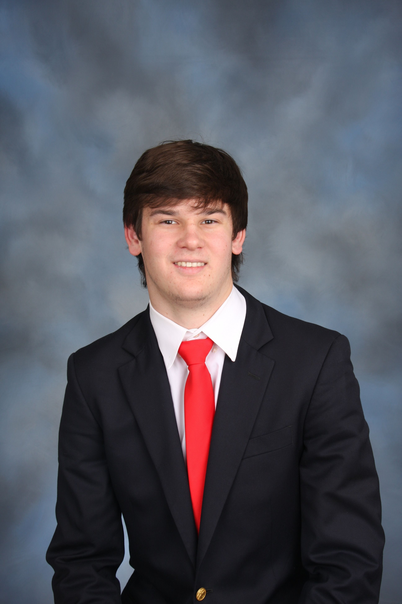

Offshore Operations & Ocean Engineering
Texas A&M Ocean Engineering graduate (Class of 2026) seeking a full-time offshore role — I turn field data into clear engineering decisions across oil & gas production, pipeline systems, and SCADA analytics.

I'm an Ocean Engineering graduate of Texas A&M University (B.S., May 2026), with hands-on experience spanning offshore oil & gas operations, construction support, and data analytics. I'm now looking for a full-time role where messy field data becomes a clear, defensible engineering decision.
Across four internships I've built Ignition/SCADA dashboards, mapped pipelines and platform connections, produced AutoCAD drawings, and helped coordinate engineering deliverables between field and office teams. My current focus is offshore production systems and the operational checks that keep platforms running safely.
As an Eagle Scout and Triple Crown recipient, I bring a steady work ethic, comfort in the field, and the leadership habits that come from guiding teams through demanding environments.
Four internships across offshore operations, construction, data analytics, and civil engineering.
Offshore Operations Engineering Intern
Offshore Gulf of Mexico
Offshore Construction Intern (Hybrid)
The Woodlands, Texas
Data Analytics Intern
The Woodlands, Texas
Civil Engineering Intern
Conroe, Texas
Offshore & project engineering
Analytics, design & reporting
B.S. Ocean Engineering
Relevant coursework: Offshore Structures, Hydromechanics, Vibrations & Control, Applied Numerical Methods.
Involvement: Society of Petroleum Engineers (SPE), Society of Naval Architects & Marine Engineers (SNAME).
College Preparatory
High school diploma · National Honor Society.
Senior Capstone Design Project
Aug 2025 – May 2026
Designing major systems for a floating offshore nuclear power barge — general arrangements, stability, and ballast — while evaluating structural loading, materials selection, corrosion resistance, and offshore operating constraints.
Member & Volunteer
Aug 2021 – May 2025
Supported community and charity events, including Wicked Woods and The Big Event, and helped plan and facilitate chapter recruitment and social events.
Eagle Scout
Nov 2014 – Aug 2020
Held leadership roles including Patrol Leader and Crew Leader for the Philmont Scout Ranch high-adventure trek, and mentored new scouts through First Class Emphasis.
Open to offshore, oil & gas, and ocean engineering opportunities. The best way to reach me is below.